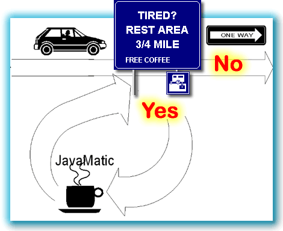
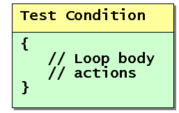

In the last few sections, you've learned how to help your
objects make decisions. You even taught your objects a little
philosophy, (how to tell truth from lies), with the introduction
of the boolean primitive type.
 Now it's time to teach your objects to work
without constant supervision. Once you teach them the skill of
iteration, you can turn them loose with a set of
instructions, and not come back until the job is done.
Now it's time to teach your objects to work
without constant supervision. Once you teach them the skill of
iteration, you can turn them loose with a set of
instructions, and not come back until the job is done.
What is iteration? Iteration is a Computer Science term that simply means repeating a set of actions. Iteration is also called repetition or looping. The statements that are used in iteration are called loops.
Let's start by comparing iteration to something you're already
familiar with: the if statement.
Iteration and Selection
Both iteration statements and selection statements
are called flow-of-control statements; they control
which code is executed inside your program. Like the
if statement, iteration is based upon evaluating a
boolean—true/false—condition, and then
performing a set of actions if the test is true, and
skipping them if the test is false.
Thus a loop, like an if statement, has both a
condition part—the test that is performed—and a
body part—the actions that are taken.
Selection Illustrated
 Iteration, however, is not the same as selection. Beginning
programmers often attempt to use a selection statement where they
should use a loop, and vice versa. It is important to be able to
distinguish the two, and equally important to be able to select
the right control structure for the job.
Iteration, however, is not the same as selection. Beginning
programmers often attempt to use a selection statement where they
should use a loop, and vice versa. It is important to be able to
distinguish the two, and equally important to be able to select
the right control structure for the job.
The selection structure works much like the illustration shown here. Driving down a divided highway, you come to a rest stop, and you pull off. When you leave the rest stop, you rejoin the highway a little further down the road.
Once you rejoin the highway, you have no opportunity to go back, and revisit the rest stop again. Those who bypass the turnoff, skip the rest stop altogether.
Iteration Illustrated
A loop structure looks similar, but not the same. As you can see
in this illustration, there is still a boolean test,
as there is with selection. But, after you've had your break, the
rest stop exit road "loops back" (hence the name), and you rejoin
the highway right where you initially left it.

If you like, you can choose to enter the rest stop once again, even though the highway is one-way. In this sense, a loop also works a little bit like a cloverleaf interchange.
Java and Iteration
Java has three loop statements,
the while loop,
the do-while loop, and the
for loop. As you might expect, each of these
loops is designed for a particular purpose; each loop has a
place where it is most effectively employed.
Where's the Test?
 One difference between the loops is where
the
One difference between the loops is where
the boolean conditional test takes place—that is,
the relative position of the loop test, and the actions contained
in the loop body.
One loop, the do-while loop, doesn't
make its test until after it has performed the actions
in the loop body at least once.
This is called a "test at the bottom" loop. It is also sometimes called a hasty loop or an unguarded loop, because it "leaps before it looks".
Test at the Top

The other two loops, thefor loop and
the while loop, both make their boolean
test before performing the actions in the loop body.
With these "test-at-the-top" loops, when the test condition is false, then the actions inside the loop body are never performed at all. Thus, they are both guarded loops.
Counted and Indefinite Loops
Classifying loops according to where their condition is tested helps keep the Java syntax straight in our minds, but it's not really very useful when it comes to deciding which loop to use when you are writing a program. As a practical matter, it's much more useful to classify loops by the kind of bounds that they employ.
A loop's bounds are the conditions under which it will repeat its actions. In a simple, counter controlled loop, the bounds might be expressed as "the counter has a value less than ten". In other, more complex loops, the bounds may be a combination of conditions involving ANDs and ORs.
There are two major kinds of loops that can be built
using the basic building blocks (for,
while, and do-while)
provided by Java. Let's look at them briefly, before we start
looking at the actual Java syntax.
Counting or Counted Loops
 A counting, (or counted), loop is a
loop that repeats its actions a fixed number of times--a
"gimme fifty pushups" kind of loop.
A counting, (or counted), loop is a
loop that repeats its actions a fixed number of times--a
"gimme fifty pushups" kind of loop.
With a "pure" counting loop you can look at the
code and tell how many times it should execute. In real life,
however, things are not so clear-cut. You often won't know what
the actual number of repetitions is until your program
runs; the number of repetitions may be based upon the
number of characters in a String, for instance,
or some other number which is not computed until your program
runs.
Indefinite Loops
With an indefinite loop, you can never tell how many times the loop will repeat by examining the code. An indefinite loop is a loop that tests for the occurence of a particular event, not a count of the number of repetitions.
 "Read characters until you encounter a period"
is an example of an indefinite loop. The condition may occur
after reading three characters, or it may occur after reading
three-thousand. It's also possible that the period might be the
first character read or, sometimes, that a period might not occur
at all.
"Read characters until you encounter a period"
is an example of an indefinite loop. The condition may occur
after reading three characters, or it may occur after reading
three-thousand. It's also possible that the period might be the
first character read or, sometimes, that a period might not occur
at all.
There are three commonly encountered types of indefinite loops that you should be aware of. Each of these indefinite loops uses a different sort of bounds:
- Data loop: A data loop is a loop that keeps going until there is no more data. This is used when reading files or sending Web pages over the Net.
- Sentinel loop: A sentinel loop is an indefinite loop that looks for the presence of a special marker contained within its input. In the "read characters until you encounter a period" example, the period is the sentinel; this kind of loop is a sentinel loop. Sentinel loops are often used in searching, but have other uses as well.
- Limit loop: Limit loops are loops that end when another repetition of the loop won't get you any closer to your goal. Limit loops are often used in scientific calculations and other numeric algorithms, when stating a precise termination condition is not possible. Often this involves monitoring the difference between two variables, and stopping the loop when the difference passes a predetermined threshold.
Now that you know a little about the different kinds of loops,
let's move on to the next section, and make this a little less theoretical and learn how to
use one of Java's loop statements. We'll start by
taking a look at the for loop.

Loop Concepts Summary
- Iteration is a CS term that means repeating a group of actions. Programming statements that perform iteration are called loops.
- A loop is a flow-of-control statement similar to
an
ifstatement. Like theif, a loop tests a condition and then performs its actions when the condition is true. Unlike anifstatement, a loop returns to the test condition after performing its actions; thus a loop repeats its actions until its test condition becomesfalse. - One way to categorize loops is where the test takes place. A test-at-the-top, or entry-condition loop, checks its condition before carrying out the actions in its body. This is sometimes called a guarded loop.
- A test-at-the-bottom, or exit-condition loop, performs its actions first, and then checks its condition to see if it should "do it again". This is sometimes called a hasty loop because it "leaps before it looks".
- Another way to categorize loops is by the kind of condition used to control them. The simplest are counter-controlled loops that compare an index or loop counter to determine how many repetitions to perform.
- More complex loops are known as indefinite loops. These include sentinel loops that look for a particular value in input, data loops that keep processing until a data source is exhausted, and limit loops, which monitor the results of a calculation.